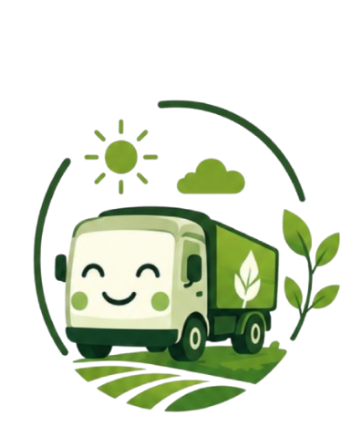

Tecnologia inteligente para construir um agro forte e sustentável
Descarte corretamente. Recicle. Preserve o campo. Garanta o futuro!
🔍 Consultar ResíduosAgro Consciente
Logística Reversa
Solo Protegido
Pesquise qualquer resíduo e veja como descartar corretamente.
Calcule o impacto ambiental e veja os benefícios das suas ações.
Encontre locais de coleta de resíduos perto de você.
Acompanhe dados e veja a diferença que estamos fazendo juntos.
Descubra o impacto e a forma correta de destinar cada material no meio rural.
Simule a quantidade de materiais reciclados ou destinados corretamente e veja o benefício real.
Insira os dados ao lado para calcular os benefícios ecológicos.
Confira as principais centrais de recebimento e destinação correta do estado.
Onde: Unidades em Maringá, Londrina, Cascavel, Ponta Grossa e Guarapuava.
Recebe: Embalagens rígidas de defensivos agrícolas lavadas (tríplice lavagem) e galões plásticos vazios.
Onde: Entrepostos e cooperativas agroindustriais autorizadas em todo o estado.
Recebe: Óleos lubrificantes usados ou contaminados (OLUC) retirados de tratores e maquinários.
Onde: Sedes de Sindicatos Rurais municipais parceiros do Sistema FAEP.
Recebe: Pilhas, baterias de rádio, lanternas, placas de circuitos e eletrônicos obsoletos do campo.
🗺️ Rede Regional Integrada de Ecopontos
Unidades ativas mapeadas em todo o Estado do Paraná. Abrir no Google Maps Real ➔Comparações visuais e tempo de decomposição dos materiais.
"A agricultura sustentável não se trata apenas de cultivar alimentos, trata-se de cuidar do solo, da água, do ar e de todos os seres vivos que dependem deles."
(SHIVA, [s.d.])